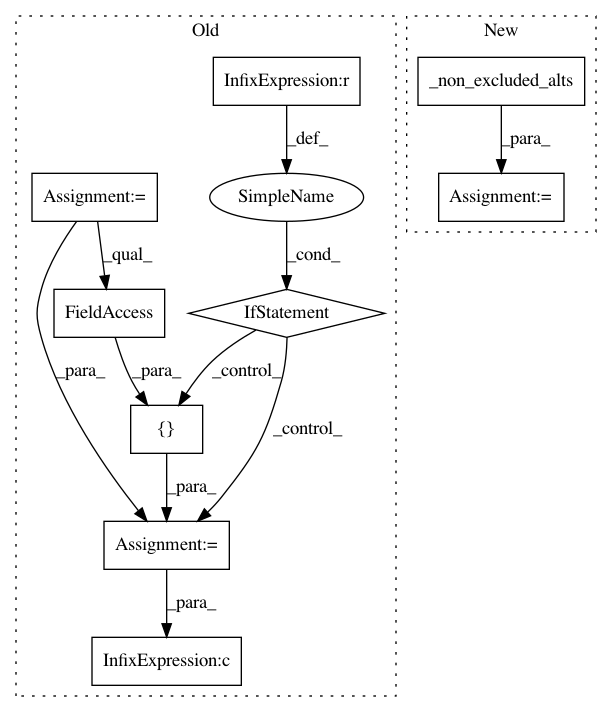

1c0e8b29a453c40b9e1828e9213b5b03d1f11a2f,nucleus/util/variant_utils.py,,is_indel,#Any#Any#,199
Before Change
// TODO(b/27246467): Handle block records.
// TODO(b/27244091): Handle symbolic alleles.
if exclude_alleles is None:
exclude_alleles = [vcf_constants.GVCF_ALT_ALLELE]
// pyformat: disable
return (not is_ref(variant) and
(len(variant.reference_bases) > 1 or
any((len(alt) > 1 and alt not in exclude_alleles)
for alt in variant.alternate_bases)))
// pyformat: enable
def is_biallelic(variant):
After Change
True if the alleles in variant indicate an insertion/deletion event
occurs at this site.
relevant_alts = _non_excluded_alts(variant.alternate_bases, exclude_alleles)
if not relevant_alts:
return False
return (len(variant.reference_bases) > 1 or
any(len(alt) > 1 for alt in relevant_alts))
In pattern: SUPERPATTERN
Frequency: 3
Non-data size: 9
Instances
Project Name: google/nucleus
Commit Name: 1c0e8b29a453c40b9e1828e9213b5b03d1f11a2f
Time: 2019-10-03
Author: no-reply@google.com
File Name: nucleus/util/variant_utils.py
Class Name:
Method Name: is_indel
Project Name: google/nucleus
Commit Name: 1c0e8b29a453c40b9e1828e9213b5b03d1f11a2f
Time: 2019-10-03
Author: no-reply@google.com
File Name: nucleus/util/variant_utils.py
Class Name:
Method Name: is_snp
Project Name: google/deepvariant
Commit Name: 4f3ec507fb0c87f0fa25f3dee5d7006e0c3dfecd
Time: 2019-10-03
Author: marianattestad@google.com
File Name: third_party/nucleus/util/variant_utils.py
Class Name:
Method Name: is_snp